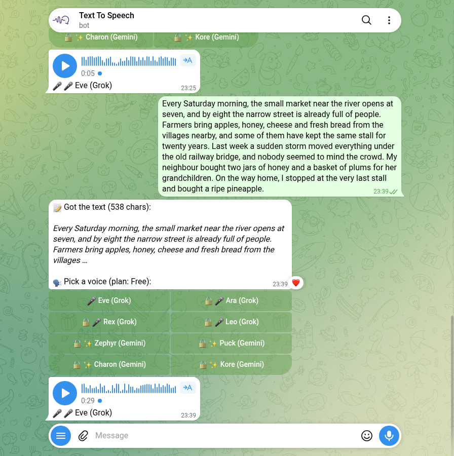

Telegram Text-to-Speech Bots: 57 Messaged, 3 Read It Right
Search Telegram for a text-to-speech bot and you get plenty: 15 searches gave me 121 of them. I sent /start to 57 on 1 November 2026, and the next night the 17 that offered to read text aloud got the same sentence, full of a date, money and a place name. Three read it right, and all three read it better than my own reference voice. Seven wanted a channel subscription, sponsor tasks or a payment first, and five of those hadn’t mentioned it in their welcome message. Here’s who answered, who read a long paragraph to the end, and how much free use you really get.
How I tested
- Corpus. 15 searches in Telegram’s own search box, picked from what Google suggests for “telegram text to speech bot”: text to speech, text to voice, tts bot, voice generator, ai voice, text to audio, read aloud and so on, plus four Russian and Ukrainian phrases for “voice the text”. They returned 121 different bots. Two web searches for lists turned up a single named bot, and it was already in the set.
- Bots this account had already messaged were left out. Telegram moves chats you’ve had into a separate “my results” list, and 47 of the 121 were there, mostly speech-to-text bots (many from my converter test) and voice changers. A new user would see some of them in the main list. Two of those 47 also say they voice text, and they aren’t in this test.
- Not every “voice” bot reads text aloud. Before sending anything I left out 17 of the remaining 74 by their own description: six that only turn speech into text, two voice changers, two that clone a voice from a sample you upload, four with some other media job (a song downloader, an anime streaming bot, an MP3-to-voice-note converter, a voice-to-picture bot) and three that aren’t public, one of which says using it is illegal unless you work for the company.
/start, then 10 seconds, to the 57 that were left, one every 15 seconds, on 1 November 2026. Silent chats were checked again later.- The test sentence:
On March 3rd, Dr. Smith paid $42.50 for 7 tickets to Kyiv.It has a date, an abbreviation, money, a number and a place name, the parts a speech engine has to normalize before it can say them. Every bot that offers text-to-speech got this sentence, after one press of its own “voice” or “language” button if that was the first thing it asked for. - How I scored the audio. I didn’t trust my own ears for this. Every reply went to the same speech-recognition bot, and I counted how many of eight words came back: March, third, Smith, forty-two, fifty, seven, tickets, Kyiv. First I ran my own reference voice through it, the open-source Piper with the
en_US-lessac-mediumvoice. It scored 6 of 8. Piper itself read the money as “dollar forty two point five zero”, so “fifty” was gone before recognition started, and “Kyiv” came back as “Q”. A bot passes at 5 of 8 or better, one word below the reference. - A long paragraph of 539 characters went only to the bots that passed. It ends with the word “pineapple”; if “pineapple” comes back, the bot read to the end. The reference voice did.
- Nothing was paid for, no channel was joined, no phone number was given, and the only voice I uploaded anywhere was my Piper reference, to the recognition bot.
Who answered at all
27 of the 57 said nothing to /start. Of the 30 that answered, 17 offered to voice text and got the test. The other 13:
- Four are walls. Two want a channel subscription first, including the one bot a web article recommended, whose own description promises 400 voices, “absolutely free”. Two more (with word-for-word identical welcome texts) want you to make an account or bring a connection code from a website.
- Two open a Mini App straight away, so there’s nothing to test in the chat.
- One is paid only. Its welcome says “this bot has no free functions” and charges per character. Its second message says Telegram is about to be blocked and sends you to its website.
- One needs an invite code. Three are shells from bot constructors with nothing behind them.
- Two do something else: one sends daily book fragments for a group to read aloud, one downloads and converts files, and its only speech feature goes the other way, voice to text.
Some bots state their free limits in the first message, before you’ve typed anything. The two bots with Russian celebrity voices (identical texts again, same contact for ads) give four voicings a day, each up to four seconds long. My sentence takes five and a half seconds in the reference voice. Another offers 700 characters free “after subscribing to our sponsors”. An audiobook bot voices your first book free, if you send it as a file.
The test sentence: 3 of 17 read it right
Seventeen bots got the sentence. Three sent audio back straight away. A fourth, @TextToSpeechBot_bot, only asked which voice I wanted after it already had my text, so it got one more try with the only voice its free plan leaves open. Seven of the seventeen put up a wall the first time I actually used them, and most of those walls hadn’t been in the welcome message.
| Bot | What it did with the sentence | Words recognised (of 8) |
|---|---|---|
| @SonoraAIBot | MP3, 6 s long, 3 s after I sent the text | 8 |
| @TextToSpeechBot_bot | Asked for a voice first (1 of 8 open on the free plan), then a 5 s voice note | 8 |
| @text_to_audio_bot | MP3, 4 s long, with four voice buttons under it | 7 (“Kyiv” came back as “give”) |
| @aleksobot | Voice note, 7 s, in a Russian voice | 2 |
| @silero_voice_bot | Asked me to join its news channel | no audio |
| @VoiceRusBot, @rusvoicesbot | Five channels plus a Mini App called GorillaCase, “to use the bot” | no audio |
| @voicegenr_bot | Channel subscription | no audio |
| @voicerrr_bot | Two “partner tasks”, or a paid subscription to skip them | no audio |
| @Chameleon_Voice_bot | A menu, and after one more tap, two subscriptions | no audio |
| @ElevenLabs4Bot | Picking a voice opened a payment screen (card, crypto, Stars) | no audio |
| @tgvoicybot | “Failed to generate voice”, twice | no audio |
| @TextTSBot, @Yavoice_bot, @text_to_audiobot | Nothing at all | no audio |
| @voisetext57_bot | Signed me up to a broadcast list instead | no audio |
| @ttsbooksoulbot | Took the file, then wanted a voice and a second confirm tap | not scored |

All three bots that passed beat my reference voice, and the money is why. Piper read “$42.50” as “dollar forty two point five zero”. Sonora, TextToSpeechBot and text_to_audio_bot all said “forty two dollars and fifty cents”, which is what a person would say, and all three read “Dr.” as “Doctor”. Two of them got the same transcript word for word: “On March third, Doctor Smith paid forty two dollars and fifty cents for seven tickets to Kiev.”
@aleksobot is the odd one. It has 15,825 monthly users, it answered fastest (1.2 seconds) and it scored 2. Its default voice is Russian, and the recogniser heard “On March three of their the air smith by dollar, sort of devout”. That isn’t a broken bot. Its own description says it’s for trending and meme voice-overs on TikTok and Shorts, and for that job a Russian voice is the point.
One fix to my own scorer: the recognition bot ignores forwarded MP3 files, so I converted the two MP3s to voice notes, the format of my reference, before scoring. Unconverted, they came back empty, a fake zero.
The walls are the bigger story. The two Russian celebrity-voice bots promised four free voicings a day in their welcome. On first use, that turned into five channels to join and a Mini App to open.
The long paragraph: all three read to the end
The three passing bots then got a 539-character paragraph, five sentences about a Saturday market, ending on “pineapple”. All three read it to the last word.
- @SonoraAIBot: one MP3, 34 seconds, ready 10 seconds after I sent the text. The same reply pitched its voice changer (“send a voice message … and I’ll redub it”).
- @TextToSpeechBot_bot: asked for the voice again (it asks after every text), then a 29-second voice note, 9 seconds later. Its welcome says longer texts can be sent in parts and it glues them together.
- @text_to_audio_bot: one MP3, 20 seconds, 15 seconds after the text. It talks fast. My reference voice took 28.6 seconds for the same paragraph.
Nothing was cut off or split, and nobody asked for money for a paragraph this long. The free allowances are smaller than they look, though. After those two texts (596 characters in all), Sonora’s balance read 0 tokens, with 1,000 used: the whole welcome gift. TextToSpeechBot’s free plan is 5 requests a day and 30 a month, up to 1,000 characters each, and I’d used 2. text_to_audio_bot doesn’t state a limit anywhere I could find; its only commands are /voice, /speed, /audio_format and /example.
Voice note or audio file
This matters more than it sounds. A voice note plays inline with the round play button, and you can forward it to someone as if you’d recorded it. An MP3 file shows up as a music track: easier to download and drop into a video editor, but it doesn’t look like a voice message when you forward it.
It’s the bot’s choice, not a limit of the format. Telegram’s Bot API has two separate methods: sendVoice, for when a bot wants clients “to display the file as a playable voice message”, and sendAudio, for “the music player”. sendVoice takes OGG/Opus, MP3 or M4A, so any of these bots could send you a voice note.
- Voice note: @TextToSpeechBot_bot (and @aleksobot).
- MP3 file: @SonoraAIBot and @text_to_audio_bot. text_to_audio_bot lists
/audio_formatand/speedcommands, so you can change both.
Voices on offer, as each bot shows them: Sonora says 150+ voices and voice cloning; TextToSpeechBot’s picker shows 8 voices, four labelled Grok and four Gemini (its description says OpenAI and Gemini), with one open on the free plan and the rest locked; text_to_audio_bot put four voice buttons under its first reply. Answer times were 3 to 15 seconds for all three, so speed won’t decide it for you.
What they send you afterwards
For two days after /start I counted what arrived unasked: anything that came more than ten minutes after my last message, outside the test session. 6 of the 30 bots that answered wrote first, 10 messages in all. @TextToSpeechBot_bot and @text_to_audio_bot sent nothing.
- The celebrity-voice twins were the worst. On 3 November both pushed the same casino ad with the same promo code. Before that, one sent “3 users liked you, want to see them?”, where Yes and No open the same link to another bot, and the other sent a joke.
- @SonoraAIBot asked for a review in exchange for bonus tokens, then offered a 299-rouble “starter pack” of 10,000 tokens, “valid for 24 hours”.
- The rest: the audiobook bot reminded me twice that my “book” could be voiced free, one bot advertised an Android security app in Uzbek, and another announced a server move and linked its channel.
Which one I’d use
- For most people: @TextToSpeechBot_bot. 8 of 8 on the sentence, the whole paragraph, and a real voice note. Its free plan is stated plainly: 5 requests a day, 30 a month, up to 1,000 characters each. The catch is one open voice out of eight, and it asks which voice after every text. It sent nothing unasked.
- For an MP3 you can edit: @text_to_audio_bot. 7 of 8 (only “Kyiv” got lost), the fastest speaker of the three, and
/speedand/audio_formatcommands. It doesn’t state a limit. - @SonoraAIBot also scored 8 of 8, but its 1,000 free tokens lasted exactly two texts. After that it’s the shop or its “Free Tokens” button, which I didn’t open, and a day later it pushed a paid starter pack.
One habit worth keeping: send a short sentence before you trust a voice bot with anything long. Five of the seven walls in this test weren’t in the welcome message; they appeared after the first tap or the first text.
Something to do with the group once the voice-overs are done
The free Party Game runs Truth or Dare, Never Have I Ever and Would You Rather as a Mini App inside Telegram, in English or Ukrainian. No channels to join, no tokens, nothing to sign up for.
Open the Party Game Need it the other way round, voice to text? See the converter bots I tested.FAQ
Is there a free text-to-speech bot on Telegram?
Yes, but fewer than the search results suggest. Of 17 bots that offered to voice text, three read my test sentence and a 539-character paragraph without asking me to join anything or pay: @SonoraAIBot, @TextToSpeechBot_bot (one free voice of eight) and @text_to_audio_bot. Seven others wanted a channel subscription, sponsor tasks or a payment before the first voicing.
Why does a voice bot ask me to subscribe to channels?
Some say what it’s for: @voicerrr_bot offers free voicing after “two partner tasks”, and the button that skips them is a paid subscription. In my test the request often came only at the first real use, not in the welcome message. Two bots that promised four free voicings a day in their welcome asked for five channels and a Mini App as soon as I sent text. Joining was never needed for the three bots that passed.
Can a bot send the speech as a voice message instead of a file?
It can. Telegram’s Bot API accepts OGG/Opus, MP3 or M4A for a playable voice message, so the format is the bot’s choice. Of the three that passed, @TextToSpeechBot_bot sends a voice note; @SonoraAIBot and @text_to_audio_bot send an MP3 that opens in the music player.
Does /stop stop a voice bot from messaging you?
Not in my test. I sent /stop to the six bots that had written first, and none took it as an unsubscribe: two tried to voice the word, one said “unknown command”, one asked me to join its channel again, and the twins showed their voice menu. The only one that stopped had its own command for it: @voisetext57_bot’s /off.
Related reading
- Telegram temp mail bots: 65 messaged, 8 delivered fast
- Telegram converter bots: 96 messaged, 25 did the job (speech to text, the other direction)
- Telegram bots for learning English: 83 tested, 3 talk back
- Telegram translator bots: 78 tested, 7 translated
- Telegram AI bots: 91 tested, the only verified one is off
- Fun Telegram bots: 117 opened, 16 work